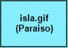
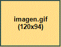
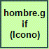

Imágenes y Colores

Un paraíso tropical

Este texto esta a un lado de la imagen.
Este tambien esta a un lado de la imagen, en la linea siguiente.
Este otro texto, en cambio, ha buscado el primer margen libre a la izquierda.
Pulsa la imagen para volver al inicio:

Volver a la página principal
| Siguiente: Tablas